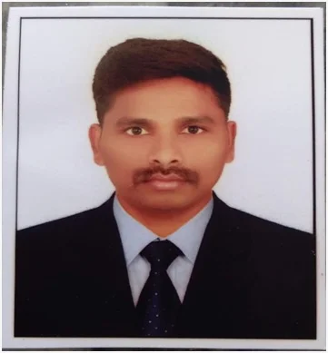

FacultyD. Srinivas
Assistant Professor (C) · Mechanical Engineering (Interdisciplinary Faculty)
Key Highlights
Profile
Mr. D. Srinivas is currently serving as an Assistant Professor in the Department of Mechanical Engineering and as an Interdisciplinary Faculty member at the University College of Engineering and Technology, Mahatma Gandhi University, Nalgonda. He has been associated with the institution since 1st September 2014.
He completed his Bachelor of Technology in Mechanical Engineering from VIST, Jawaharlal Nehru Technological University Hyderabad, in 2010 and earned his Master of Technology in Machine Design from SBIST, Jawaharlal Nehru Technological University Hyderabad.
He is presently pursuing a Ph.D. with a specialization in Friction Stir Welding, reflecting his commitment to advanced research in manufacturing and welding technologies.
With more than 12 years of teaching experience, he has contributed significantly to engineering education and institutional development. He has actively participated in national seminars and workshops organized by JNTU Hyderabad and other academic institutions.
In addition to his teaching responsibilities, he is presently serving as the Head of the Department and has contributed to various institutional committees, including Admissions, Sports, and other academic and administrative bodies.
Academic & Administrative Contributions
Research Interest
Assistant Professor (C)
Department of Mechanical Engineering
University College of Engineering and Technology
Mahatma Gandhi University, Nalgonda
sduddela6364@gmail.com